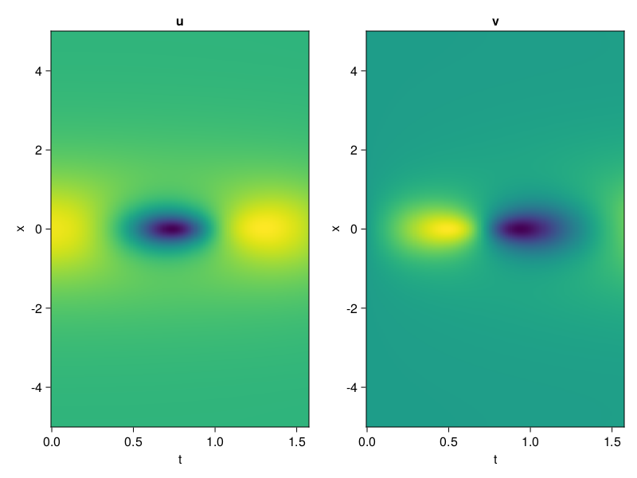
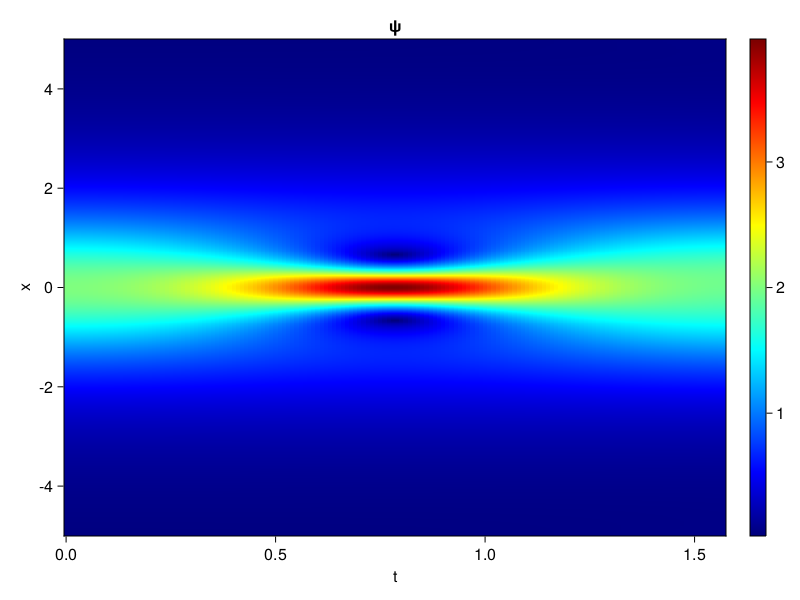
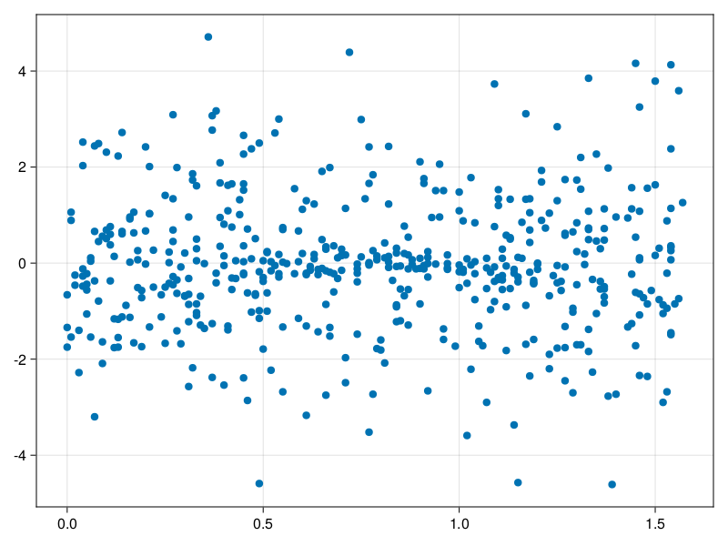

Schrödinger equation
The nonlinear Shrödinger equation is given by
\[\mathrm{i} \partial_t \psi=-\frac{1}{2} \sigma \partial_{x x} \psi-\beta|\psi|^2 \psi\]
Let $\sigma=\beta=1, \psi=u+v i$, the equation can be transformed into a system of partial differential equations
using ModelingToolkit, IntervalSets, Sophon, CairoMakie
using Optimization, OptimizationOptimJL
@parameters x,t
@variables u(..), v(..)
Dₜ = Differential(t)
Dₓ² = Differential(x)^2
eqs=[Dₜ(u(x,t)) ~ -Dₓ²(v(x,t))/2 - (abs2(v(x,t)) + abs2(u(x,t))) * v(x,t),
Dₜ(v(x,t)) ~ Dₓ²(u(x,t))/2 + (abs2(v(x,t)) + abs2(u(x,t))) * u(x,t)]
bcs = [u(x, 0.0) ~ 2sech(x),
v(x, 0.0) ~ 0.0,
u(-5.0, t) ~ u(5.0, t),
v(-5.0, t) ~ v(5.0, t)]
domains = [x ∈ Interval(-5.0, 5.0),
t ∈ Interval(0.0, π/2)]
@named pde_system = PDESystem(eqs, bcs, domains, [x,t], [u(x,t),v(x,t)])\[ \begin{align} \frac{\mathrm{d}}{\mathrm{d}t} u\left( x, t \right) =& - \frac{1}{2} \frac{\mathrm{d}}{\mathrm{d}x} \frac{\mathrm{d}}{\mathrm{d}x} v\left( x, t \right) - \left( \left|u\left( x, t \right)\right|^{2} + \left|v\left( x, t \right)\right|^{2} \right) v\left( x, t \right) \\ \frac{\mathrm{d}}{\mathrm{d}t} v\left( x, t \right) =& \frac{1}{2} \frac{\mathrm{d}}{\mathrm{d}x} \frac{\mathrm{d}}{\mathrm{d}x} u\left( x, t \right) + \left( \left|u\left( x, t \right)\right|^{2} + \left|v\left( x, t \right)\right|^{2} \right) u\left( x, t \right) \end{align} \]
pinn = PINN(u = Siren(2,1; hidden_dims=16,num_layers=4, omega = 1.0),
v = Siren(2,1; hidden_dims=16,num_layers=4, omega = 1.0))
sampler = QuasiRandomSampler(500, (200,200,20,20))
strategy = NonAdaptiveTraining(1,(10,10,1,1))
prob = Sophon.discretize(pde_system, pinn, sampler, strategy)OptimizationProblem. In-place: true
u0: ComponentVector{Float64}(u = (layer_1 = (weight = [-0.05635625123977661 0.04062730073928833; 0.04500657320022583 -0.08333355188369751; … ; 0.0873255729675293 0.47785842418670654; -0.25643330812454224 0.20909255743026733], bias = [0.0; 0.0; … ; 0.0; 0.0;;]), layer_2 = (weight = [0.33420518040657043 -0.3012223243713379 … 0.5144217610359192 0.44295835494995117; -0.02485082298517227 -0.2954130172729492 … 0.17497660219669342 -0.2813407778739929; … ; -0.5756887793540955 -0.007238289341330528 … -0.38900065422058105 -0.18962779641151428; -0.5236446261405945 0.3918472230434418 … -0.2338673323392868 -0.47340962290763855], bias = [0.0; 0.0; … ; 0.0; 0.0;;]), layer_3 = (weight = [-0.39844244718551636 -0.029614249244332314 … -0.006485946476459503 0.10395735502243042; -0.03429350629448891 -0.5191439390182495 … 0.46128228306770325 -0.6064431667327881; … ; -0.187319815158844 -0.20587798953056335 … -0.575257420539856 -0.076250821352005; -0.08742865920066833 -0.5240838527679443 … -0.5909690260887146 0.3452131450176239], bias = [0.0; 0.0; … ; 0.0; 0.0;;]), layer_4 = (weight = [-0.4166065752506256 0.22843718528747559 … 0.5761468410491943 0.337028831243515; 0.41697946190834045 0.4404429793357849 … -0.4626854956150055 -0.06594125926494598; … ; -0.5279176235198975 0.15875472128391266 … -0.4039507806301117 0.01331397332251072; 0.18476858735084534 0.4152836501598358 … 0.0664299950003624 0.22399809956550598], bias = [0.0; 0.0; … ; 0.0; 0.0;;]), layer_5 = (weight = [0.022718114778399467 0.5363634824752808 … 0.4143046438694 0.5835584998130798], bias = [0.0;;])), v = (layer_1 = (weight = [0.1859157681465149 -0.20311766862869263; 0.1997719407081604 0.15609878301620483; … ; 0.0800330638885498 -0.4037243127822876; 0.04163920879364014 -0.39883172512054443], bias = [0.0; 0.0; … ; 0.0; 0.0;;]), layer_2 = (weight = [0.4710193872451782 0.5048817992210388 … -0.32804208993911743 0.13353890180587769; 0.19427208602428436 -0.1127936989068985 … -0.2560538649559021 -0.24682578444480896; … ; -0.3658673167228699 0.17541292309761047 … -0.17303529381752014 -0.4634874761104584; 0.5144071578979492 0.2177247256040573 … -0.06682843714952469 0.4276041090488434], bias = [0.0; 0.0; … ; 0.0; 0.0;;]), layer_3 = (weight = [-0.05671341344714165 0.017735101282596588 … 0.058510176837444305 0.33818718791007996; 0.06157006323337555 0.2547055184841156 … 0.34425032138824463 0.10892117023468018; … ; -0.09699376672506332 -0.029145514592528343 … 0.23806039988994598 -0.5304169058799744; -0.35679173469543457 -0.3122779428958893 … -0.5993563532829285 -0.21841998398303986], bias = [0.0; 0.0; … ; 0.0; 0.0;;]), layer_4 = (weight = [0.5488342642784119 -0.3763315677642822 … 0.07418951392173767 -0.49295514822006226; 0.01542755588889122 -0.4517606198787689 … -0.5616267919540405 0.22737883031368256; … ; 0.22337569296360016 -0.5626198649406433 … -0.07492499053478241 -0.5029945373535156; -0.2964664697647095 -0.11452724039554596 … 0.42175567150115967 0.41289106011390686], bias = [0.0; 0.0; … ; 0.0; 0.0;;]), layer_5 = (weight = [0.5709809064865112 -0.39707151055336 … -0.07375785708427429 0.2845640480518341], bias = [0.0;;])))Now we train the neural nets and resample data while training.
function train(pde_system, prob, sampler, strategy, resample_period = 500, n=10)
bfgs = BFGS()
res = Optimization.solve(prob, bfgs; maxiters=2000)
for i in 1:n
data = Sophon.sample(pde_system, sampler)
prob = remake(prob; u0=res.u, p=data)
res = Optimization.solve(prob, bfgs; maxiters=resample_period)
end
return res
end
res = train(pde_system, prob, sampler, strategy)u: ComponentVector{Float64}(u = (layer_1 = (weight = [-0.17709191901677365 0.5473902805780021; 0.2592888861785084 0.6231771594747448; … ; 0.351105115490178 0.26816434662728816; -0.27047264840808294 0.4138387400779785], bias = [-0.26730494700907986; -0.28194363024344893; … ; -0.01781706951020971; -0.18846967660915862;;]), layer_2 = (weight = [0.3237999522386255 0.013417484303365921 … 0.6368911179932153 0.7016670513367549; -0.3862250300102241 -0.6395922603809645 … -0.2653271797301864 -0.27137497401836974; … ; -0.8128722044169301 0.08361085185681325 … -0.36669801723151707 -0.5343604787131844; -0.4217178259540239 0.4742121124801679 … -0.6256203648335535 -0.2782222759556308], bias = [0.3650526342526282; -0.0874033033499089; … ; 0.039712346674019836; -0.4225891752294488;;]), layer_3 = (weight = [-0.3564314946506454 -0.12030027269657588 … 0.13034832290999265 0.2791844003091737; 0.1524605037405393 -0.6140137623244054 … 0.3052565147901451 -0.21526306160004444; … ; -0.08639276068930789 -0.199583845174902 … -0.47363255010389405 0.15378965080793644; 0.14148281074376864 -0.2420842164675498 … -0.8823178965276814 0.5978915691679266], bias = [-0.10614915192892295; -0.05305915006243688; … ; -0.07313734050710594; -0.008479238099411847;;]), layer_4 = (weight = [-0.27807415491667387 0.16804403913039037 … 0.527358134793921 0.27451959191396835; 0.42679391438411773 0.6940268967809444 … -0.21310247670043592 -0.44578478152480433; … ; -0.480353503787949 0.20959185987201126 … -0.4642581894329326 0.020281445224779034; 0.508047245494467 0.6625657401352283 … 0.22583754062625636 -0.043036574786605726], bias = [0.06396308505190972; 0.0971411769950375; … ; -0.16180700620224775; 0.10383605865429964;;]), layer_5 = (weight = [-0.17752746535353084 0.5697313521245927 … 0.11898114116932033 0.5860264442372224], bias = [0.2110489892061614;;])), v = (layer_1 = (weight = [-0.06311075504331605 -0.3373198595495929; 0.2389633833431763 -0.21718704501379793; … ; 0.15428949545010134 -0.5640786567137626; -0.011936939001186348 -0.41298617454937603], bias = [-0.09104478989109709; 0.030838205882886018; … ; 0.570591388795649; 0.08521450547552602;;]), layer_2 = (weight = [0.35245835281162236 0.405613654393396 … -0.14989887740506408 0.1484664414631729; 0.29103573398071986 -0.2121244116704841 … -0.3712618333285586 -0.027723972973464208; … ; -0.43250928873409883 0.32555673127921836 … -0.5111800020552855 -0.5723520297747348; 0.32347560236360784 0.015251960996091355 … -0.1775341792130085 0.36103483798118446], bias = [-0.13475672596723925; -0.2563721332442751; … ; -0.20877569401998292; 0.0917006800289891;;]), layer_3 = (weight = [-0.0034993260432861343 -0.14131270516863392 … -0.09308642736606587 0.3277628553292797; 0.15556436269398394 0.2511650548325932 … 0.18462471675808498 0.314483271786221; … ; -0.18910273126024338 -0.01852916940506105 … -0.03447007858480966 -0.37417915561260434; -0.5069462887539433 -0.3571025908562757 … -0.5444758884815413 -0.26079611357125876], bias = [-0.1901963338664886; -0.2815361885027968; … ; -0.1472054185187274; 0.07175020045279133;;]), layer_4 = (weight = [0.912968992057702 -0.500725335515938 … 0.2864958635312122 0.48306823265349275; -0.128367659525454 -0.5093299777204008 … -0.36199545272845396 0.5605081334195171; … ; 0.3597220596846834 -0.48341178949916225 … -0.1058643531853071 -0.518531696712028; 0.19397692794295335 0.1108110802944845 … 0.15586010487865412 0.44114634068401437], bias = [-0.7299181711184566; 0.1275817130701817; … ; 0.08100550843623171; -0.0015816841644867787;;]), layer_5 = (weight = [0.36236962203916845 -0.001632735219491084 … -0.3014293850903584 -0.9684746865732354], bias = [0.16070670975783538;;])))phi = pinn.phi
ps = res.u
xs, ts= [infimum(d.domain):0.01:supremum(d.domain) for d in pde_system.domain]
u = [sum(phi.u(([x,t]), ps.u)) for x in xs, t in ts]
v = [sum(phi.v(([x,t]), ps.v)) for x in xs, t in ts]
ψ = @. sqrt(u^2+ v^2)
axis = (xlabel="t", ylabel="x", title="u")
fig, ax1, hm1 = heatmap(ts, xs, u', axis=axis)
ax2, hm2= heatmap(fig[1, end+1], ts, xs, v', axis= merge(axis, (; title="v")))
display(fig)
axis = (xlabel="t", ylabel="x", title="ψ")
fig, ax1, hm1 = heatmap(ts, xs, ψ', axis=axis, colormap=:jet)
Colorbar(fig[:, end+1], hm1)
display(fig)
Customize Sampling
Bascially any sampling method is supportted. For example we can sample data according to the predicted solution.
using StatsBase
data = vec([[x, t] for x in xs, t in ts])
wv = vec(ψ)
new_data = wsample(data, wv, 500)
new_data = reduce(hcat, new_data)
fig, ax = scatter(new_data[2,:], new_data[1,:])
prob.p[1] = new_data
prob.p[2] = new_data
prob = remake(prob; u0 = res.u)
# res = Optimization.solve(prob, bfgs; maxiters=1000)OptimizationProblem. In-place: true
u0: ComponentVector{Float64}(u = (layer_1 = (weight = [-0.17709191901677365 0.5473902805780021; 0.2592888861785084 0.6231771594747448; … ; 0.351105115490178 0.26816434662728816; -0.27047264840808294 0.4138387400779785], bias = [-0.26730494700907986; -0.28194363024344893; … ; -0.01781706951020971; -0.18846967660915862;;]), layer_2 = (weight = [0.3237999522386255 0.013417484303365921 … 0.6368911179932153 0.7016670513367549; -0.3862250300102241 -0.6395922603809645 … -0.2653271797301864 -0.27137497401836974; … ; -0.8128722044169301 0.08361085185681325 … -0.36669801723151707 -0.5343604787131844; -0.4217178259540239 0.4742121124801679 … -0.6256203648335535 -0.2782222759556308], bias = [0.3650526342526282; -0.0874033033499089; … ; 0.039712346674019836; -0.4225891752294488;;]), layer_3 = (weight = [-0.3564314946506454 -0.12030027269657588 … 0.13034832290999265 0.2791844003091737; 0.1524605037405393 -0.6140137623244054 … 0.3052565147901451 -0.21526306160004444; … ; -0.08639276068930789 -0.199583845174902 … -0.47363255010389405 0.15378965080793644; 0.14148281074376864 -0.2420842164675498 … -0.8823178965276814 0.5978915691679266], bias = [-0.10614915192892295; -0.05305915006243688; … ; -0.07313734050710594; -0.008479238099411847;;]), layer_4 = (weight = [-0.27807415491667387 0.16804403913039037 … 0.527358134793921 0.27451959191396835; 0.42679391438411773 0.6940268967809444 … -0.21310247670043592 -0.44578478152480433; … ; -0.480353503787949 0.20959185987201126 … -0.4642581894329326 0.020281445224779034; 0.508047245494467 0.6625657401352283 … 0.22583754062625636 -0.043036574786605726], bias = [0.06396308505190972; 0.0971411769950375; … ; -0.16180700620224775; 0.10383605865429964;;]), layer_5 = (weight = [-0.17752746535353084 0.5697313521245927 … 0.11898114116932033 0.5860264442372224], bias = [0.2110489892061614;;])), v = (layer_1 = (weight = [-0.06311075504331605 -0.3373198595495929; 0.2389633833431763 -0.21718704501379793; … ; 0.15428949545010134 -0.5640786567137626; -0.011936939001186348 -0.41298617454937603], bias = [-0.09104478989109709; 0.030838205882886018; … ; 0.570591388795649; 0.08521450547552602;;]), layer_2 = (weight = [0.35245835281162236 0.405613654393396 … -0.14989887740506408 0.1484664414631729; 0.29103573398071986 -0.2121244116704841 … -0.3712618333285586 -0.027723972973464208; … ; -0.43250928873409883 0.32555673127921836 … -0.5111800020552855 -0.5723520297747348; 0.32347560236360784 0.015251960996091355 … -0.1775341792130085 0.36103483798118446], bias = [-0.13475672596723925; -0.2563721332442751; … ; -0.20877569401998292; 0.0917006800289891;;]), layer_3 = (weight = [-0.0034993260432861343 -0.14131270516863392 … -0.09308642736606587 0.3277628553292797; 0.15556436269398394 0.2511650548325932 … 0.18462471675808498 0.314483271786221; … ; -0.18910273126024338 -0.01852916940506105 … -0.03447007858480966 -0.37417915561260434; -0.5069462887539433 -0.3571025908562757 … -0.5444758884815413 -0.26079611357125876], bias = [-0.1901963338664886; -0.2815361885027968; … ; -0.1472054185187274; 0.07175020045279133;;]), layer_4 = (weight = [0.912968992057702 -0.500725335515938 … 0.2864958635312122 0.48306823265349275; -0.128367659525454 -0.5093299777204008 … -0.36199545272845396 0.5605081334195171; … ; 0.3597220596846834 -0.48341178949916225 … -0.1058643531853071 -0.518531696712028; 0.19397692794295335 0.1108110802944845 … 0.15586010487865412 0.44114634068401437], bias = [-0.7299181711184566; 0.1275817130701817; … ; 0.08100550843623171; -0.0015816841644867787;;]), layer_5 = (weight = [0.36236962203916845 -0.001632735219491084 … -0.3014293850903584 -0.9684746865732354], bias = [0.16070670975783538;;])))